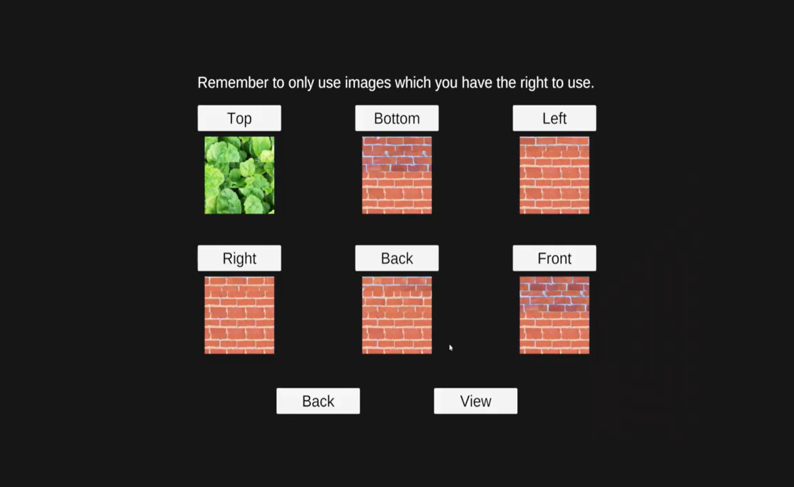
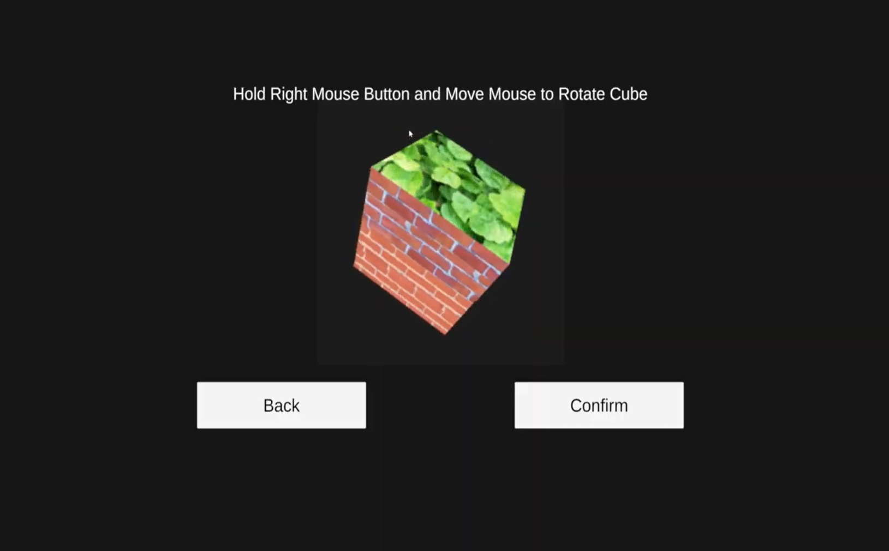
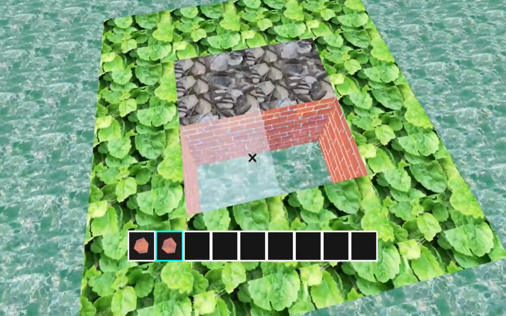
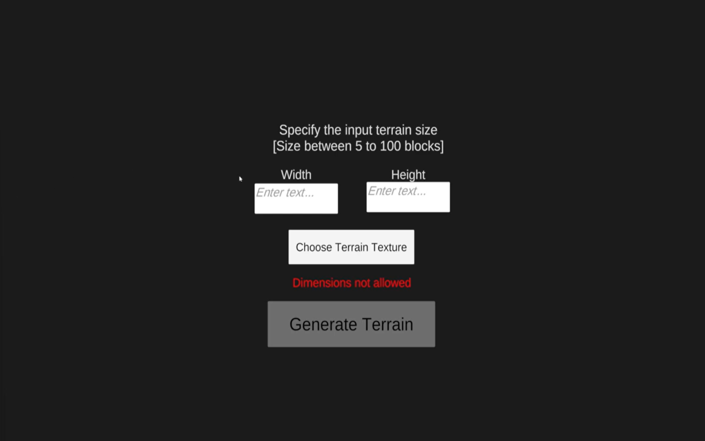

图块形象合成
介绍
这个项目是我第一个专注用 Compute Shaders 的 Unity 项目，也是我大学电脑科最终年度项目。 这个项目的主要目标是实现一个基于图块合成的创作。
它接收一个 范例纹理，并生成一个任意大小且看起来与范例纹理类似的新纹理。只是一位游戏设计师和数字艺术家。
这个项目是我第一个专注用 Compute Shaders 的 Unity 项目，也是我大学电脑科最终年度项目。 这个项目的主要目标是实现一个基于图块合成的创作。
它接收一个 范例纹理，并生成一个任意大小且看起来与范例纹理类似的新纹理。算法首先接收一个范例纹理，并将范例纹理分割成小的正方形 图块。然后保存每个图块的边界像素，用于计算图块之间的相似度。
然后，算法开始创建新纹理，方法是从范例纹理中随机选择一个图块， 然后根据现有图块的边界像素添加新图块。这个算法相当复杂， 因此如果您感兴趣，欢迎查看我撰写的完整文档。
文档




我透过这个项目学到了很多关于 Compute Shaders 的知识，并理解了 使用 Compute Shaders 如何将繁重的计算工作从 CPU 转移到 GPU， 显著提高算法某些方面的效能。
这是我第一个使用 3D 元素的 Unity 项目（或游戏项目）。 因此，我学会了如何在 Unity 中使用 3D 射线检测，以及使用一些 3D 材质。